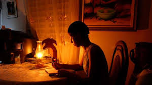
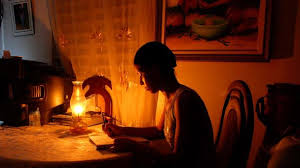

Hoy en día es un problema para todo República Dominicana la electricidad,
tenemos muchos problemas sobre esto personas protestan para poder tener electricidad.
Altos precios en las facturas son problemas que el gobierno debe resolver para el bienestar de la comunidad
la pregunta aquí es cómo lograremos esto junto a este programa podremos ayudar a las personas que protestan y
hacer
Entender al gobierno que no es un tema para quedarse de brazos cruzados.
Los más afectados por esta situación son las personas que viven
en los campos ya que allá la electricidad es escasa igual que
con las personas de bajos recursos que no se pueden permitir
pagar altas facturas de luz y a estos se les corta la luz por atrasarse
con el pago.
Aún así las personas que si pueden permitirte pagar las tarifas de la luz
suelen haber masivos apagones durante horas incluso un día completo.
 

Tenemos que hacer llegar este programa a más personas para poder continuar con esto y poder avanzar
Este programa especialmente está dirigido a las autoridades.
en verdad necesitamos que mejoren el servicio de electricidad
Además de los problemas que mencione anteriormente otro problemas que deben de solucionar
es que cuando no tenemos el servicio de electricidad los alimentos que necesitan estar refrigerados se dañan
y no es fácil para las personas de bajos recursos comprar alimentos porque la electricidad se ha ido
los alimentos cuestan dinero y a esas personas que lo necesitan es mucho más difícil conseguirlos por la escasez
de dinero.
Así que por favor necesitamos un mejor servicio de electricidad para poder vivir más cómodos y con más
facilidades
de vida , si esto sigue pasando tomaremos medidas de denuncias y protestas en contra de este servicio.